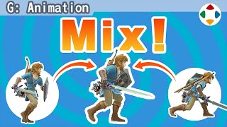
速览
动作混合（Animation Blending）是组合两个以上动作的技术。例如在讲攻击动作拆解的一集中提到过取消帧：攻击后一定破绽之后是取消帧，开始接受操作。在取消帧之后操作时，不会突然「啪」地动，而是成为操作产生的动作与取消帧之后动作合成的姿势。从待机进入步行没有违和感；从攻击进入步行也看不出来。这是从待机进入步行的瞬间、这是从攻击进入步行的瞬间：步行动作只有一个，开头姿势却相差很多——这是动作混合的效果。动作混合可以指定适用度与时间。但正如补间一集所说，中间动作增加会失去张弛；机械补间也可能破绽，所以不会花很长时间，迅速完成。另外护盾举起时的移动也是动作混合：把绕外周的动作和固定在中心的动作相乘。不过在利落的《大乱斗》中动作混合影响没那么大，反倒是 3D 游戏才更能发挥：上半身下半身分别控制、对地形的相对脚步、武器展开的倾斜、状态迁移等，复杂到看不出混合到哪里。不只是动作好、也不是技术能无破绽地填补就行——永无止境的研究，现在也在某处继续吧；说不定机器人工学也在做相近的事。
1. 什么是动作混合 0:04
动作混合是组合两个以上动作的技术。
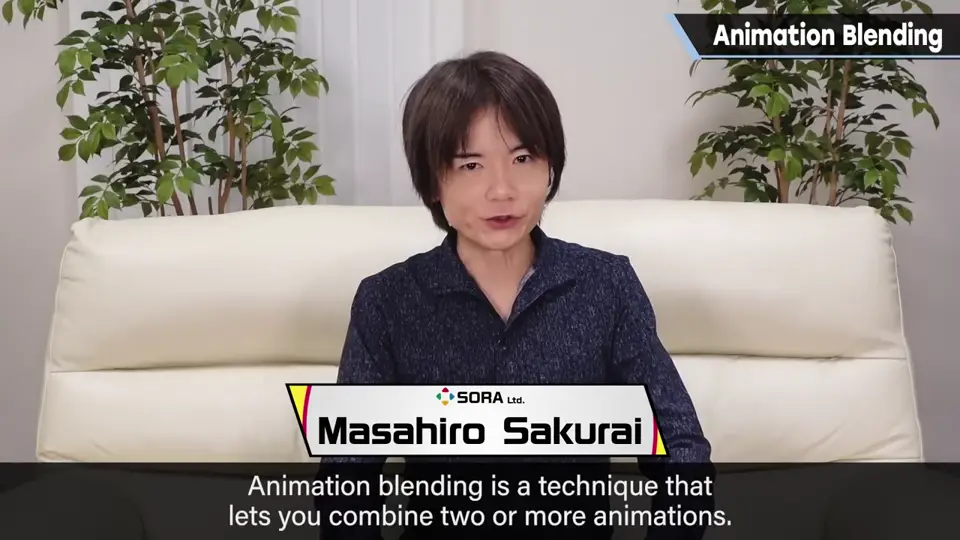
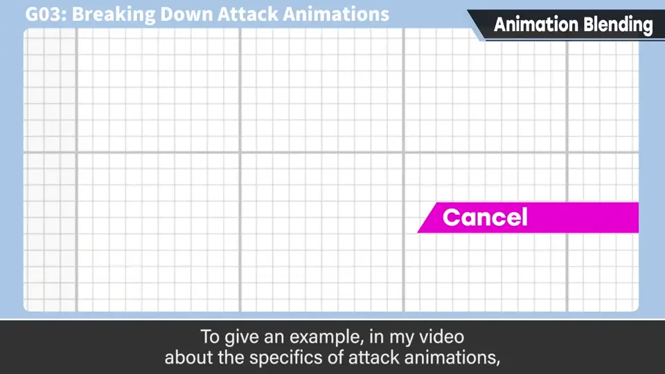
讲攻击动作拆解时提到过取消帧：攻击后一定破绽之后是取消帧，开始接受操作。
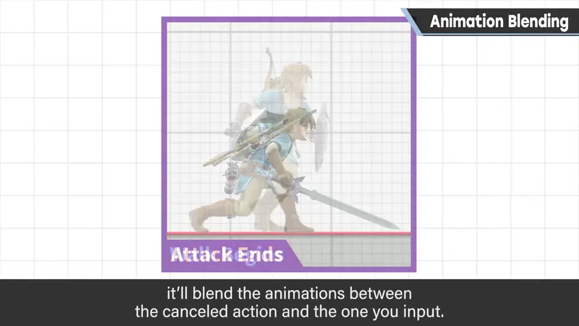
2. 两种步行开头 0:38
从待机进入步行没有违和感；从攻击进入步行也看不出来。
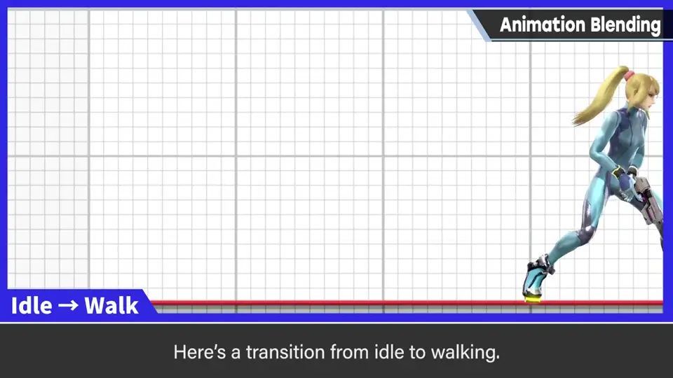
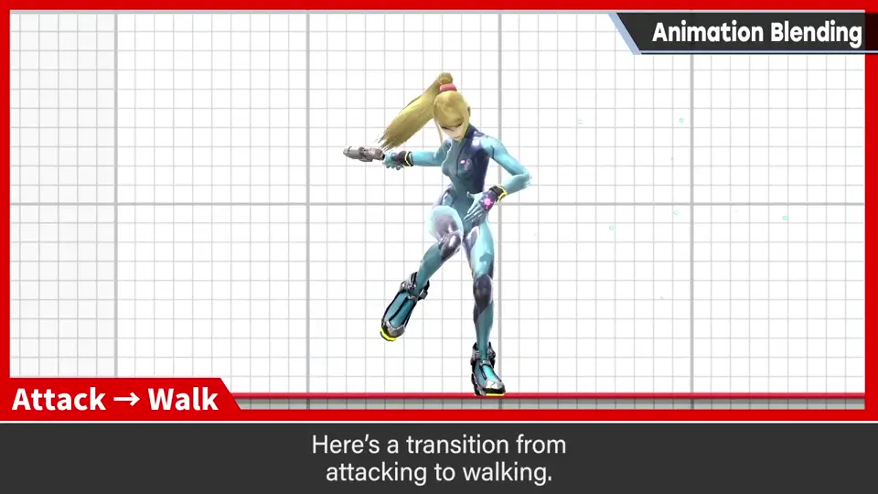
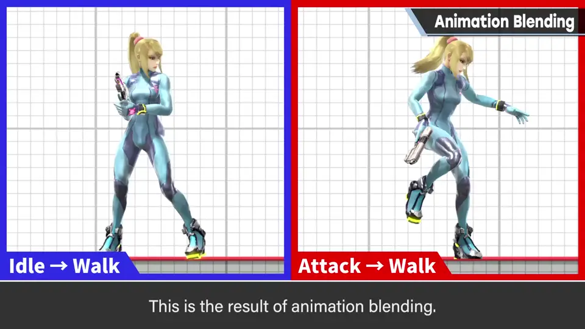
这是从待机进入步行的瞬间，这是从攻击进入步行的瞬间：
3. 参数与注意 1:15
动作混合可以指定适用度与时间。
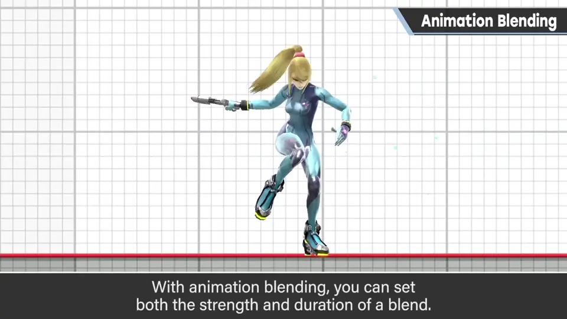
但正如补间一集所说，中间动作增加会失去张弛；机械补间也可能破绽。所以不会花很长时间，迅速完成。
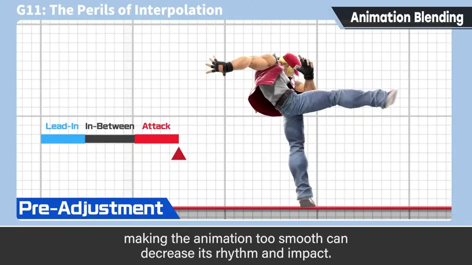
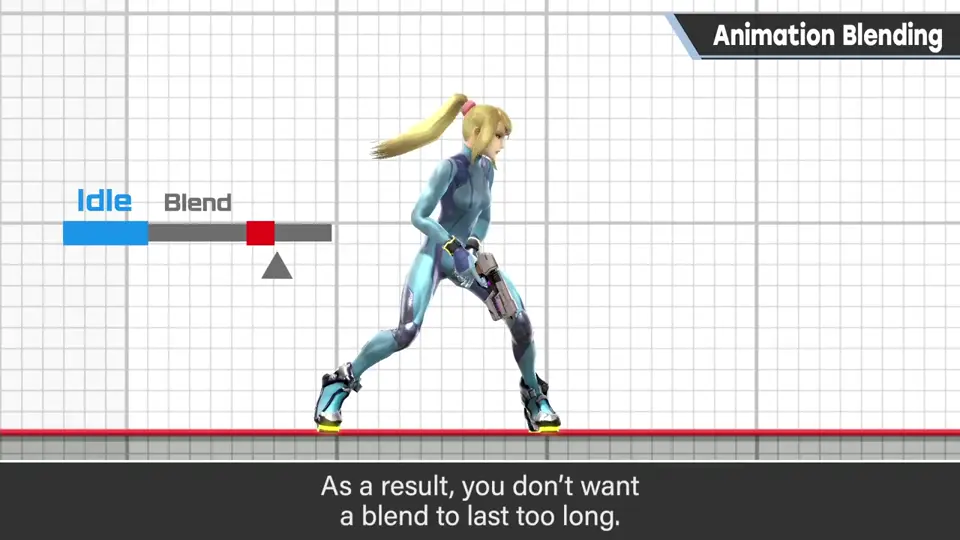
护盾举起时的移动也是动作混合：把绕外周的动作与固定在中心的动作相乘。
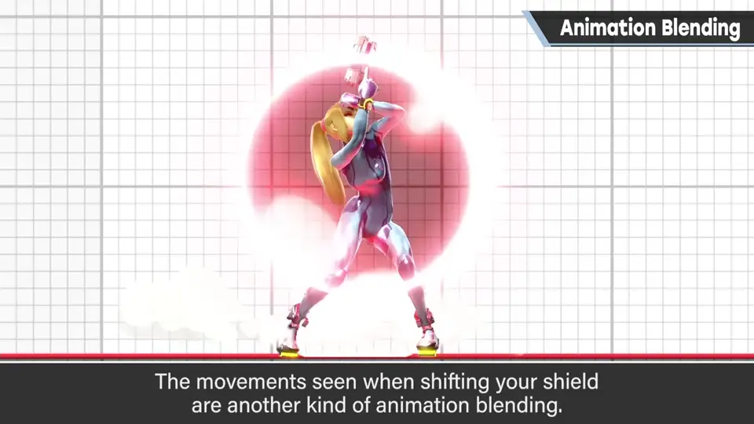
4. 3D 游戏更能发挥 2:07
不过在利落的《大乱斗》中，动作混合影响没有那么大。反倒是 3D 游戏才更能发挥。
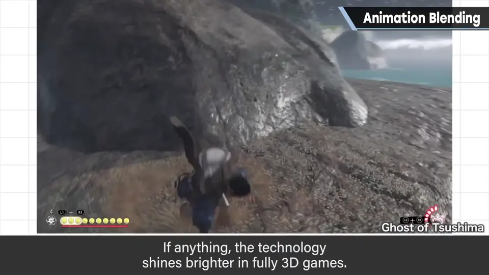
- 上半身与下半身分别控制。
- 对地形的相对脚步。
- 武器展开的倾斜、状态迁移等。
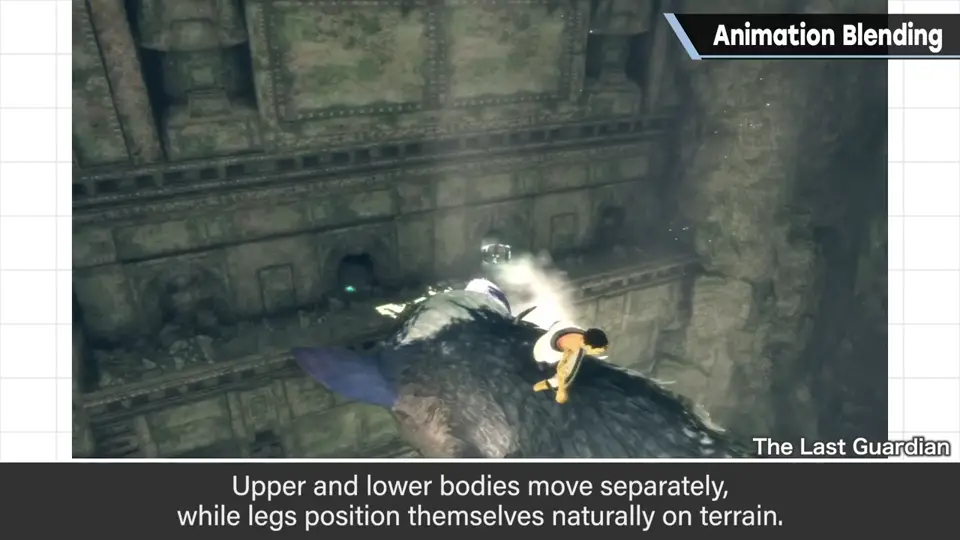
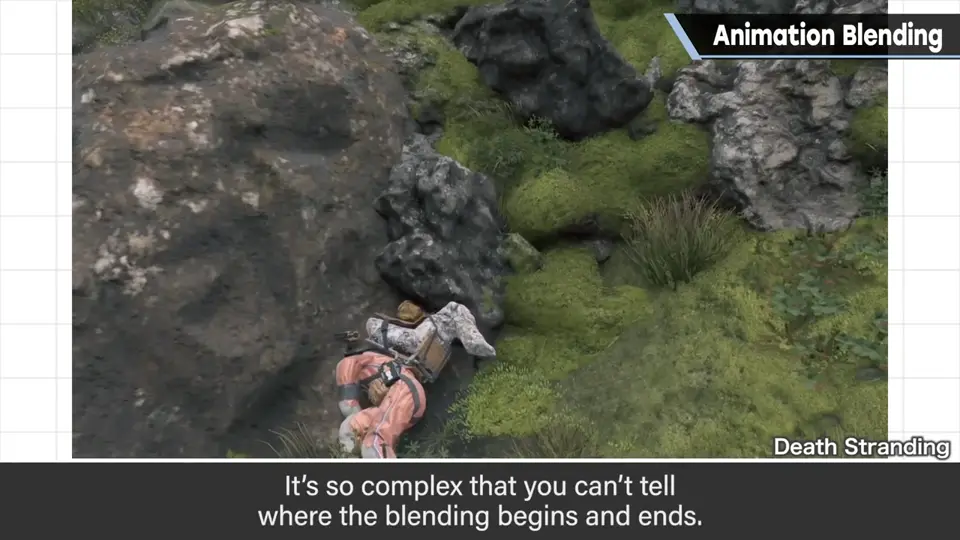
自测题
1. 动作混合在取消帧中起什么作用？
把操作产生的动作和取消帧后的动作合成，避免突然切换。 0:25
2. 为什么混合不能花太长时间？
中间动作增加会失去张弛，机械补间也可能破绽。 1:40
3. 动作混合在哪类游戏更有用？举例。
3D 游戏：上下半身分控、地形脚步、状态迁移等。 2:20